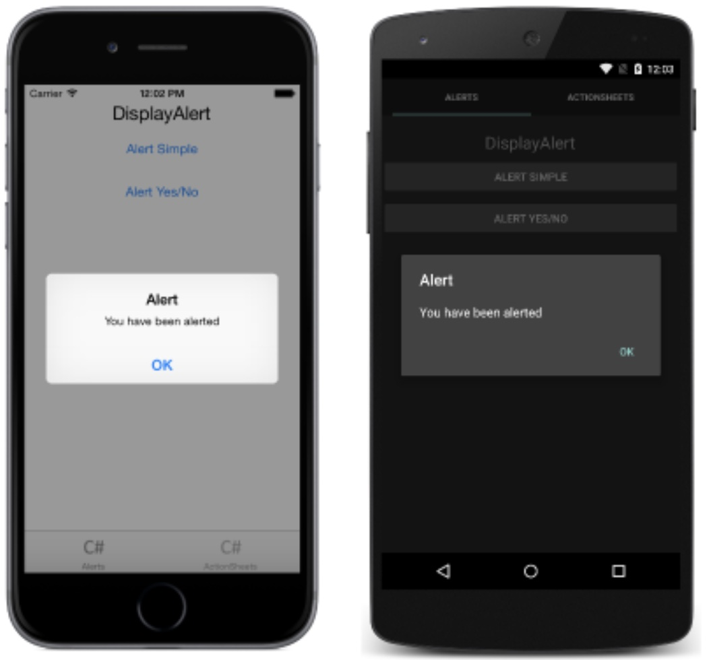
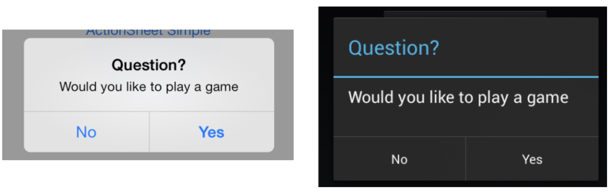
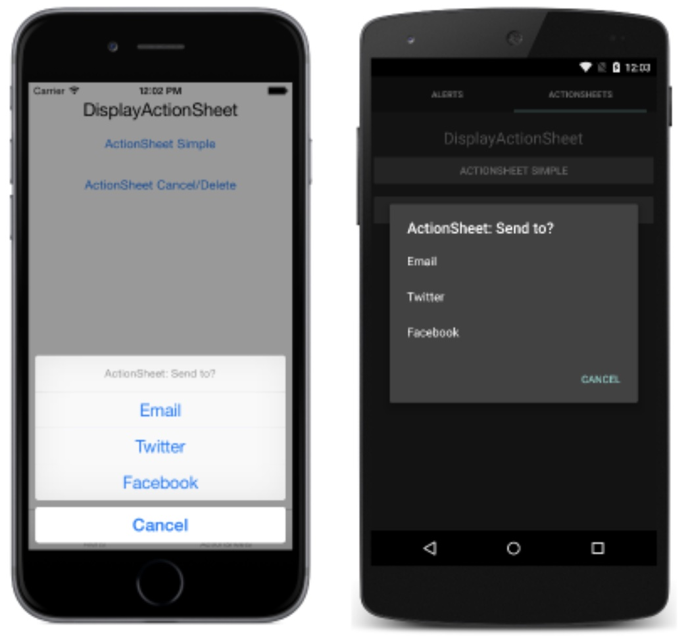

Popupelemente (Dialogs) und Steuerelemente
async, SQLite und HTTP ClientPage als Command-Parameter mitgebenDisplayAlert("", "") auf irgendeine Seite aufrufenawait das Resultat
DisplayAlert(string title, string message, string cancel);
DisplayAlert(string title, string message,
string accept, string cancel);
DisplayActionSheet(string title, string cancel,
string destruction, params string[] buttons);



DeleteItemCommand = new Command<Page>(async page =>
{
var result = await page.DisplayAlert("Confirm", "Are you sure?", "YES", "NO");
if (result)
{
Items.Remove(SelectedItem);
}
});
async void OnActionSheetSimpleClicked(object sender, EventArgs e)
{
string action = await DisplayActionSheet("ActionSheet: Send to?", "Cancel",
null, "Email", "Twitter", "Facebook");
Debug.WriteLine("Action: " + action);
}
<?xml version="1.0" encoding="utf-8"?>
<ContentPage
xmlns="http://xamarin.com/schemas/2014/forms"
xmlns:x="http://schemas.microsoft.com/winfx/2009/xaml"
x:Class="Todo.Views.TodoListPage"
xmlns:local="clr-namespace:Todo.Converters;assembly:Todo"
xmlns:viewModels="clr-namespace:Todo.ViewModels;assembly:Todo"
x:DataType="viewModels:TodoListViewModel"
x:Name="Page">
<ContentPage.Content>
<Button Text="Delete" WidthRequest="100" Margin="20,0,0,0"
Command="{Binding DeleteItemCommand}" CommandParameter="{x:Reference Page}" />
</ContentPage.Content>
</ContentPage>
Ein Dialog in der eigenen App einbauen
<Style> Element eines Elements gesetztTargetType bestimmt den geerbten Style
<Label
Grid.Column=“2"
Text="X"
TextColor=“Red" />
<ContentPage
xmlns="http://xamarin.com/schemas/2014/forms"
xmlns:x="http://schemas.microsoft.com/winfx/2009/xaml"
x:Class="Todo.Views.TodoListPage"
Title="List">
<ContentPage.Style>
<Style>
<Setter
Property="BackgroundColor"
Value="Black" />
</Style>
</ContentPage.Style>
<!-- other content -->
<ContentPage/>
ResourceDictionary aufsetzen:
<Application
xmlns="http://xamarin.com/schemas/2014/forms"
xmlns:x="http://schemas.microsoft.com/winfx/2009/xaml"
x:Class="Todo.App">
<Application.Resources>
<ResourceDictionary>
<Color x:Key="Background">Black</Color>
<Style x:Key=“ContentPageStyle" TargetType="ContentPage">
<Setter Property="BackgroundColor" Value="{StaticResource Background}" />
</Style>
</ResourceDictionary>
</Application.Resources>
</Application>
ContentPageStyle aus dem App ResourceDictionary referenzieren:
<ContentPage xmlns="http://xamarin.com/schemas/2014/forms"
xmlns:x="http://schemas.microsoft.com/winfx/2009/xaml"
x:Class="Todo.Views.TodoListPage"
x:Name="Page"
Title="List"
Style="{StaticResource ContentPageStyle}">
Style mit einem TargetType assoziieren:
<Style TargetType="Button">
<Setter Property="BackgroundColor" Value="#3541a0" />
<Setter Property="TextColor" Value="White" />
<Setter Property="HeightRequest" Value="50" />
</Style>
ButtonEntryPickerLabel| Triggers | Auf Events in XAML reagieren |
| Custom Renderer | Das Aussehen eines Native-Controls komplett anpassen |
| Effects | Plattformspezifische Anpassungen ohne Renderer |
Eure Apps ein bisschen stylen